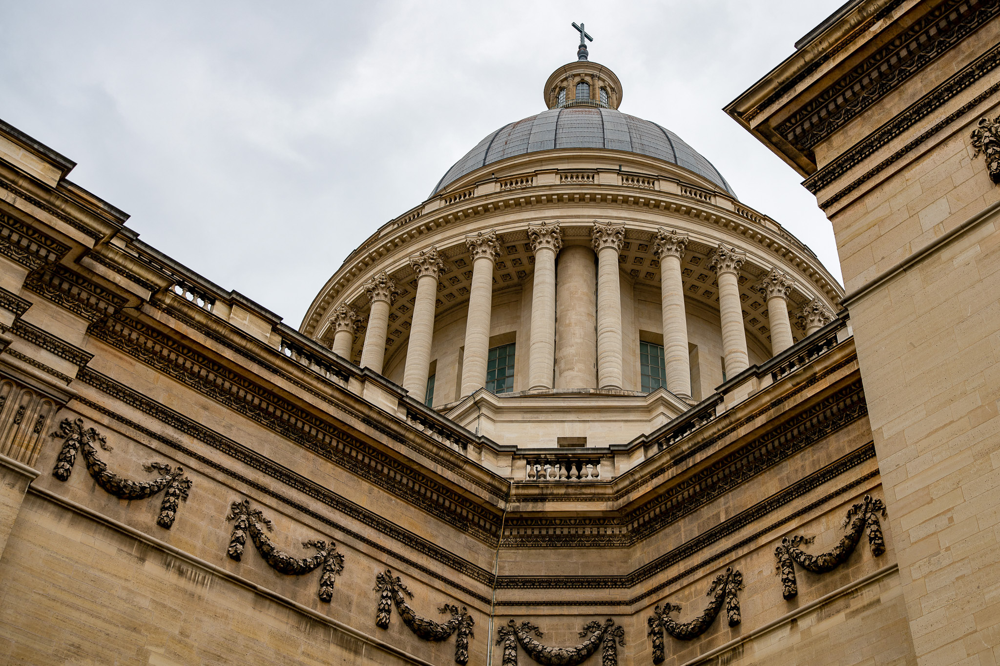
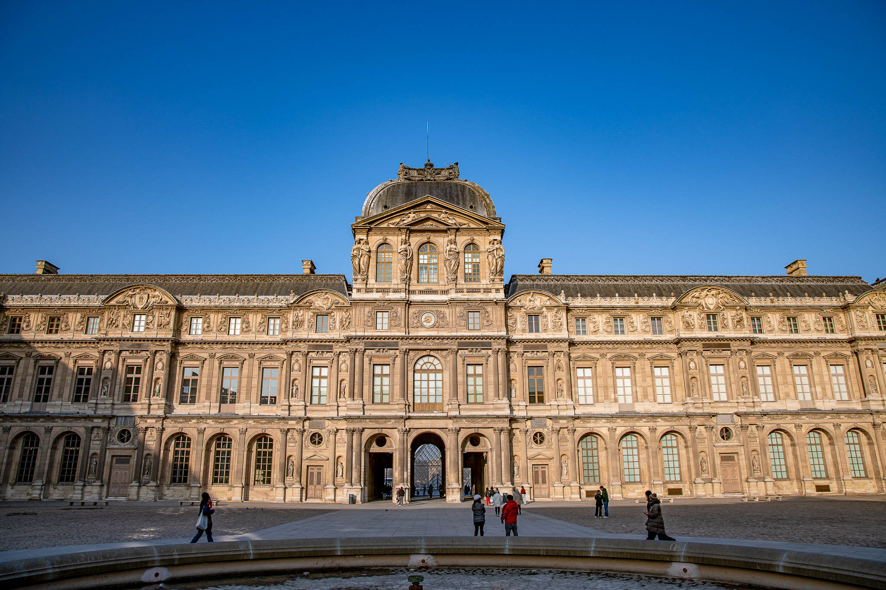
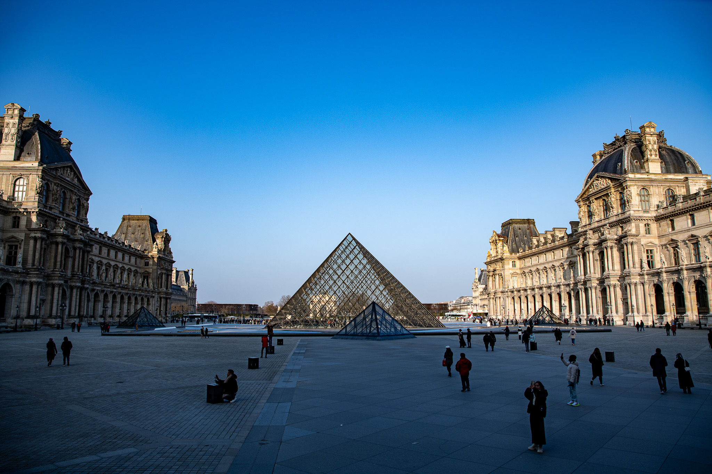
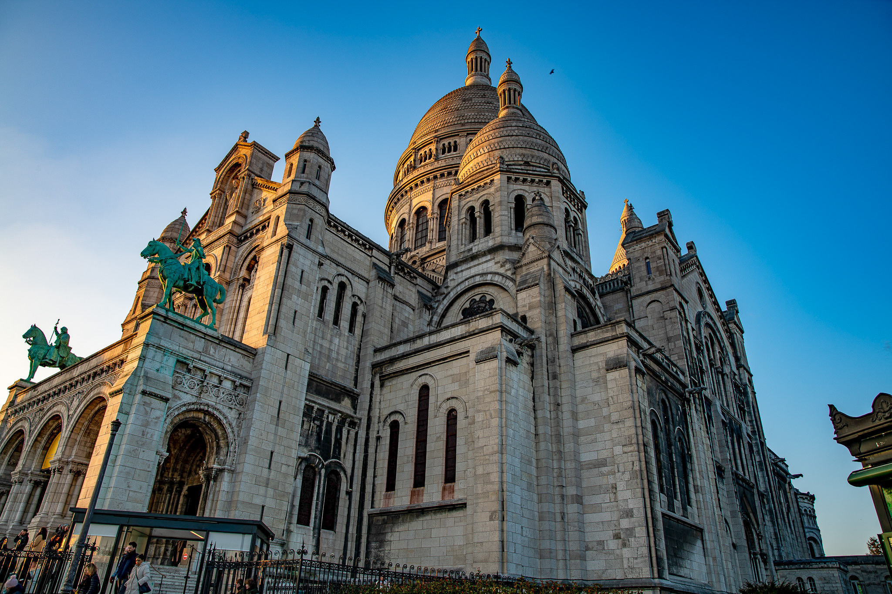
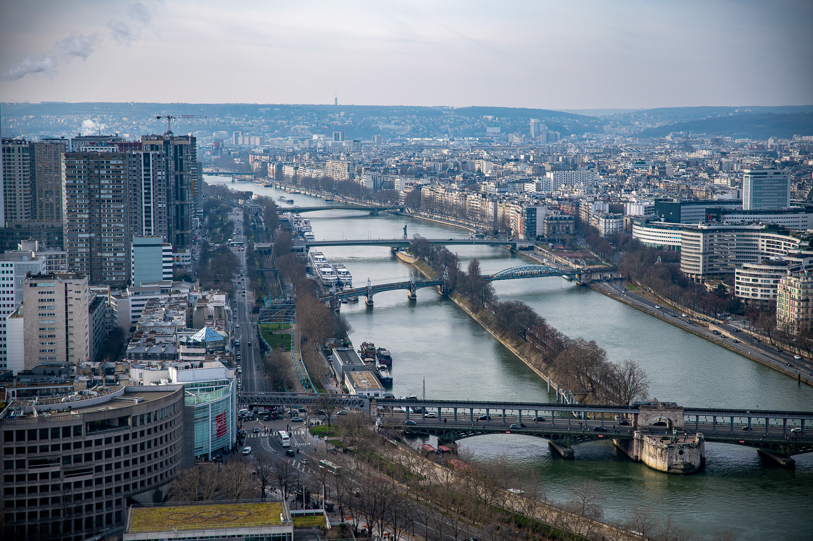
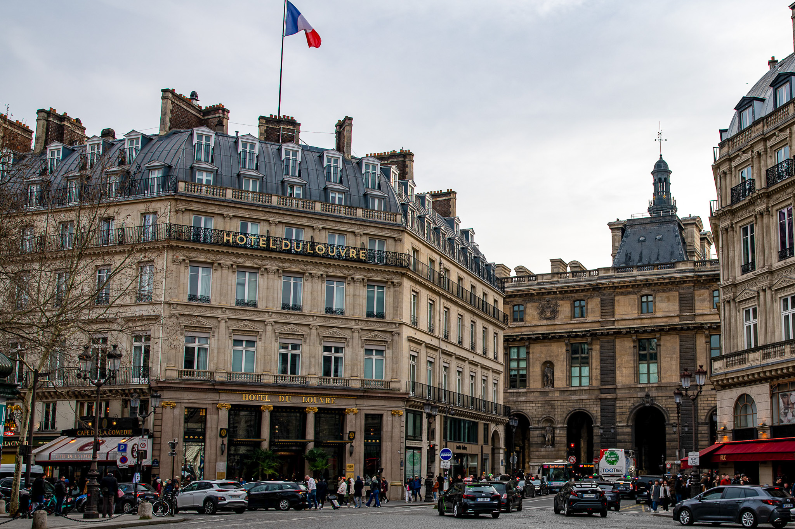

Fotografie
Eine Auswahl aus meiner Reisefotografie — entstanden in Paris. Im Creative Studio habe ich zusätzlich Events mit der Kamera begleitet und meine Bildbearbeitung mit Lightroom und Photoshop vertieft.
Paris






Hier deinen zweiten Titel eintragen


Überbetriebliche Kurse